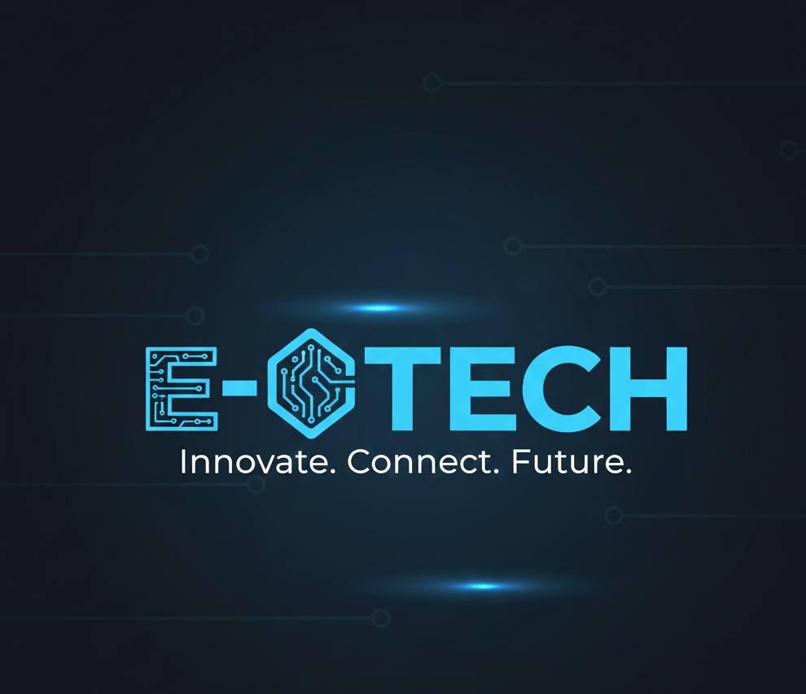
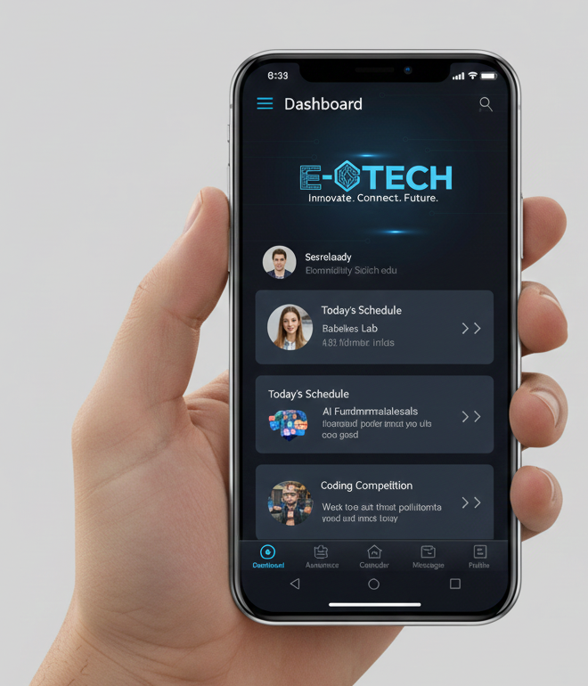
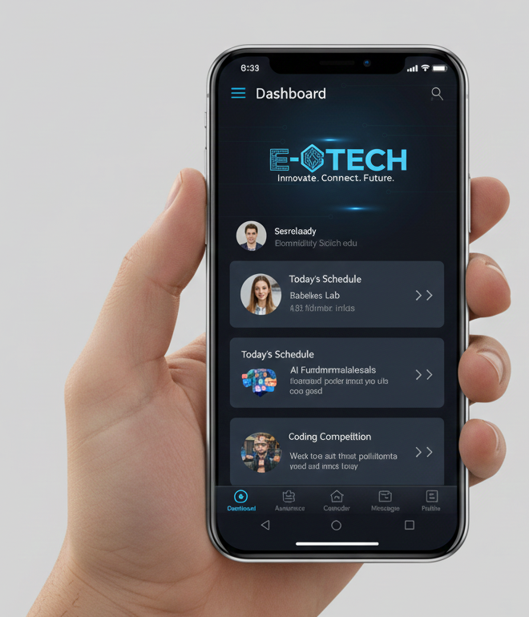

E-TECH
E-tech is own by the CEO Samuel Precious Chimezie E-tech also run into technologies as it own basic fact in the gobal world, it name was gotten from the name Emmanuel (which means God Is with Us). It feature that E-Tech is run by God Divine grace as a techist.
E-tech run into technologiesand also into educations, from the future to learn and advance into the soceities of the nations. With the help of E-tech many young youth can learn technology, both in secondary and institution.
E-TECH
- E-Tech web site
- Secondary School
- Applications
- institution for Tech
.jpg)
.jpg)
.jpg) 

About the CEO
Samuel Precious Chimezie
Chief Executive Officer (CEO)
Technology & Education
Samuel Precious Chimezie is the visionary Chief Executive Officer of E-Tech, a forward-thinking technology company dedicated to transforming the world of digital innovation and education. With a strong background in software development, digital solutions, and modern learning systems, the CEO has spent years building technology that empowers individuals, students, and organizations to learn, grow, and succeed.
As a passionate tech leader, Samuel Precious Chimezie combines deep technical expertise with a mission-driven approach to education. This unique blend allows the CEO to guide E-Tech in creating user-friendly tools, smart platforms, and digital resources that make learning accessible and efficient for everyone.
Vision and Leadership
Under the leadership ofSamuel Precious Chimezie, E-Tech aims to bridge the gap between technology and education. The CEO believes that the future belongs to those who are equipped with digital skills and that technology should be used to unlock human potential.
Their leadership focuses on:
- Developing innovative educational technologies
- Supporting young developers and learners
- Providing digital learning solutions for schools and institutions
- Promoting tech literacy and online education
- Building platforms that make tech knowledge accessible to all
Achievements
- Launched multiple digital learning products under E-Tech
- Implemented modern tech solutions for small businesses and schools
- Trained young people in coding, design, and digital skills
- Led E-Tech to become a recognized name in tech education
- Supported community-based technology awareness programs
Mission of the CEO
The CEO’s mission is to create a world where technology enhances education and provides equal opportunities for all learners. Through E-Tech, they continue to build tools that inspire creativity, encourage problem-solving, and prepare the next generation for a digital future.
Samuel Precious Chimezie stands as an inspiring technology and education leader, pushing E-Tech forward with innovation, passion, and purpose. With a strong commitment to empowering learners and transforming digital experiences, the CEO continues to shape the future of tech-driven education.
back